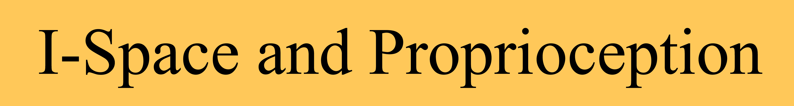
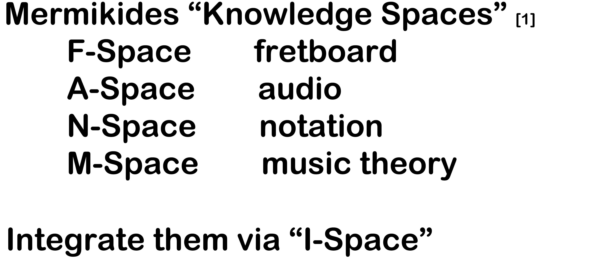
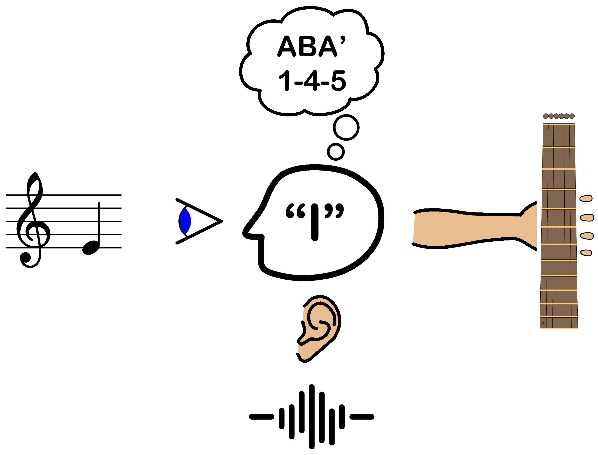
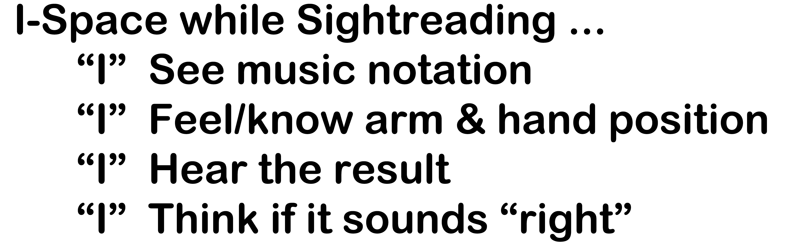
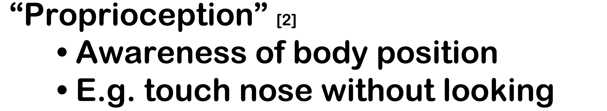
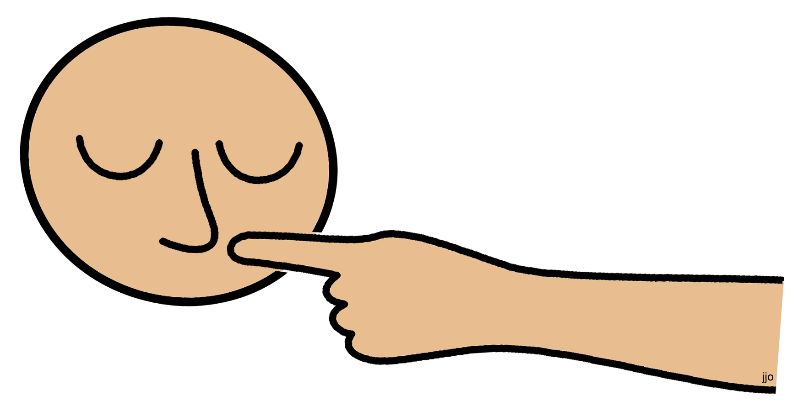
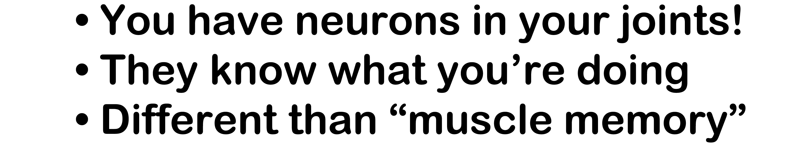
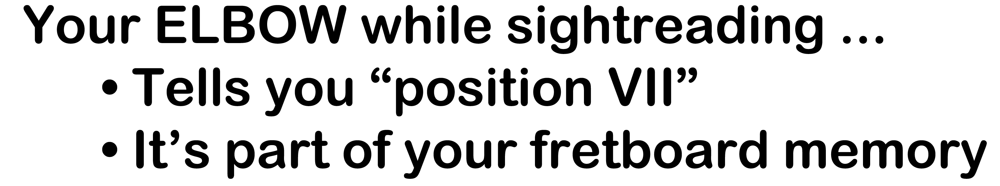
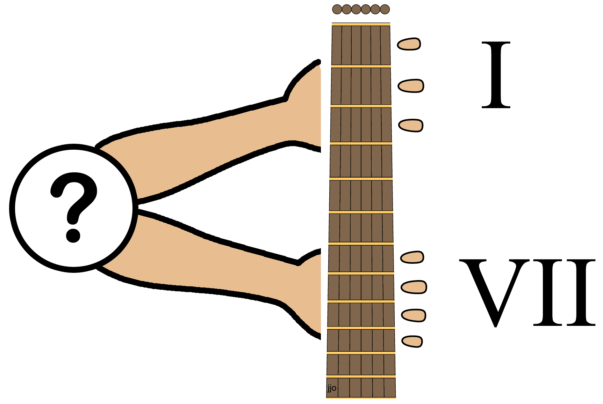

◄ Prev
LilyPond and Fingering Complexity Metrics
I-Space and Proprioception While Sightreading
An experienced sightreader interacts with all four of the spaces Mermikides named in his keynote presentation at GFA four years ago, including via an ability that most guitarists didn't know they had. Adding a fifth space, "I-Space", helps focus on those interactions.




Interactions with F-Space aren't limited to just feeling the strings/frets and forming chords. Our bodies have neurons in our joints that can know which position we're playing in. It's called "proprioception". It's not the muscle memory you get from repetition, but an unpracticed ability. Police officers once used it as a field sobriety test. You can use it in sightreading (if you're sober).





So proprioception can supply the cue you need to access the position-dependent memory maps you've learned. It can also help when learning a new piece, before your muscle memory kicks in. All guitarists should know about it (blind ones do).
[1] Mermikides, Milton. 2022. “Diamonds, Abaci, and Hexagrams: Exploring the Pitch Surface of the Guitar Fretboard”
Soundboard Scholar 8, (1).
https://doi.org/10.56902/SBS.2022.8.4
https://www.youtube.com/watch?v=b7wpq075ecM&t=45s
[2] Wikipedia, s.v. "Proprioception," last modified May 14, 2026, 21:09,
https://en.wikipedia.org/wiki/Proprioception